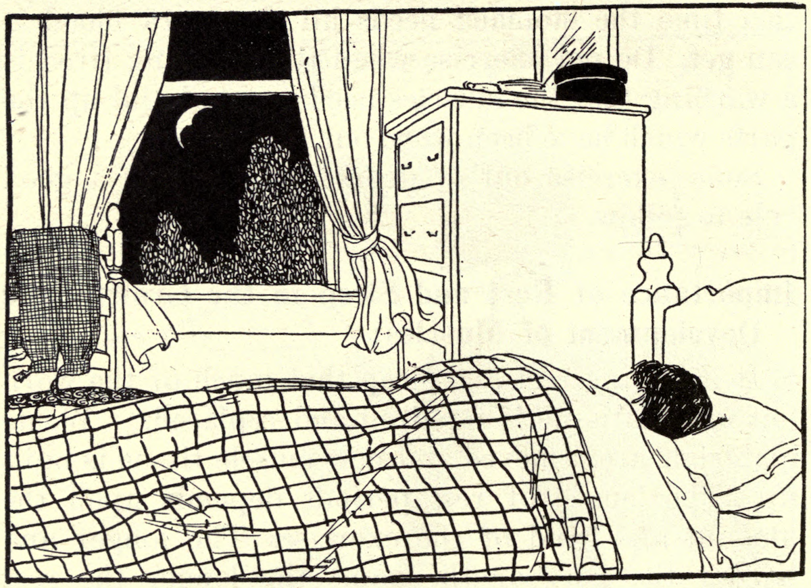
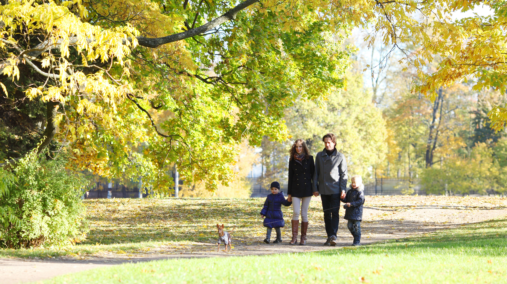
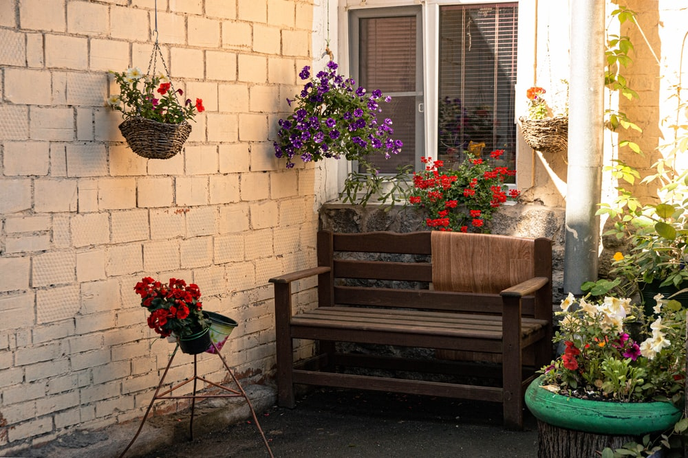
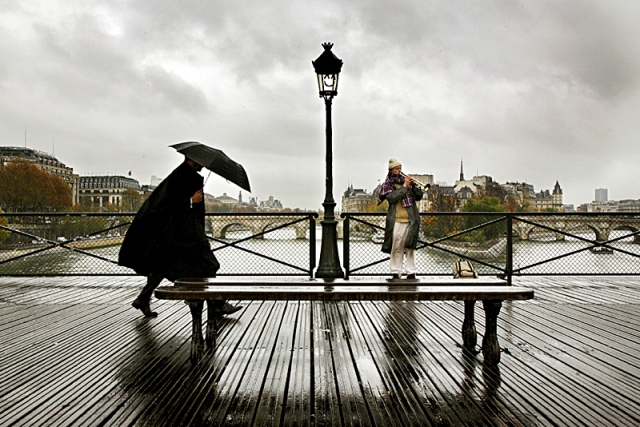

fresh air is good
Fresh air is rich in oxygen, which increases the level of oxygen circulating in your blood. This also means more oxygen supply to the brain, which facilitates the release of serotonin, a feel-good hormone associated with increased energy levels, happiness, mood stabilization, and feelings of worthiness.
- Fresh air makes you happier.
- Fresh air cleans your lungs.
- Fresh air strengthens your immune system.
- Fresh air is good for your digestive system.
- Fresh air reduces airborne illnesses and infections
- Fresh air increases your energy and sharpens your mind.
- Fresh air helps you sleep better at night

some different ways to spend time on fresh air
- I often go for walks in the park, so we are closer to our nature. And the air there is not as polluted as in the city center.
- I have many potted plants at home. They need a lot of care. I water them with good warm water. And they give me fresh air.
- I live in a high-rise building, on the eighth floor. Luckily I have a roof terrace. I like to spend my free time here. I feel free here and closer to nature. In the morning I do my yoga exercises here. Sometimes I invite my friends to sunbathe.
- I enjoy nature in the city when it rains. That might be funny. I don't stay in the house when it rains, I go out. I enjoy empty streets and fresh air. The rain cleans the air, after the rain there is no more dust and dirt. And I especially like the rainbow somewhere between the houses.


